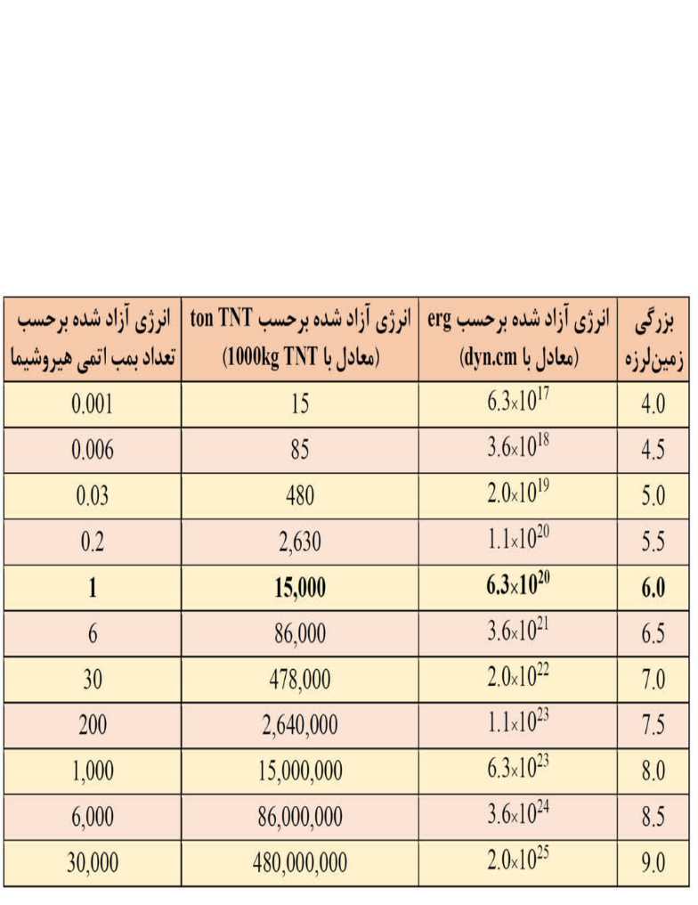

بازگشت
بازگشت

افزایش مقدار بزرگی و انرژی آزاد شده
در مقیاس بزرگی MW، به ازای هر واحد افزایش مقدار بزرگی زمینلرزه، مقدار انرژی آزاد شده حدود ۳۱/۶ برابر بیشتر میشود.
مقیاسهای بزرگی زمینلرزه مبتنی بر فرمولهای تجربی عبارتند از: مقیاس بزرگی محلی (ML)، مقیاس بزرگی امواج درونی (mb) و مقیاس بزرگی امواج سطحی (MS).
فرمولبندی ریاضی این مقیاسها به صورت تجربی تعیین شدهاند و وابسته به مقدار حداکثر دامنه ثبت شده از جنبش زمین ناشی از انتشار یک موج لرزهای با دوره تناوب معین است.
در حالت کلی، با افزایش انرژی آزاد شده توسط یک زمینلرزه، دامنه امواج لرزهای ثبت شده از آن نیز بزرگتر خواهد بود.
هرچند با افزایش فاصله از رومرکز زمینلرزه، مقدار حداکثر دامنه ثبت شده از جنبش زمین در بستر سنگی کاهش مییابد، اما فرمولبندی تجربی تعیین بزرگی زمینلرزه به گونهای است که با درنظر گرفتن فاصله ایستگاه لرزهنگاری از کانون زمینلرزه، مقدار بزرگی تعیین شده برای یک زمینلرزه در موقعیتهای مکانی مختلف ایستگاههای لرزهنگاری، مقدار تقریبا یکسانی است.
کاناموری (زمینلرزهشناس ژاپنی) در سال 1977 میلادی، مقیاس بزرگی گشتاوری (MW) را ارائه نمود. این مقیاس بزرگی که فرمولبندی آن برحسب گشتاور لرزهای (M0) است، به عنوان یک کمیت فیزیکی به طور مستقیم متناسب با انرژی آزاد شده (ناشی از زمینلرزه) بوده و به دامنه ثبت شده از جنبش زمین وابسته نیست.